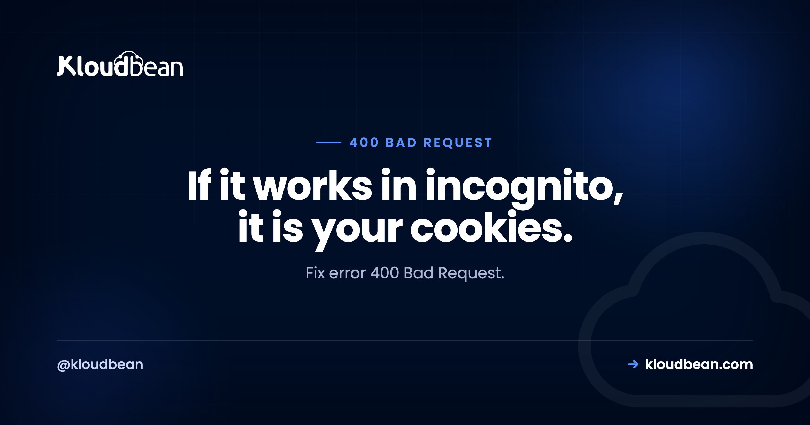

Error 400 Bad Request: The Server Rejected It Before Your App Saw It

Error 400 Bad Request means the server decided your request was malformed and would not process it. The reason this one is confusing is that two entirely separate things produce it. Either the web server rejected the raw HTTP request before your application ever ran, or your application ran and its validation refused the payload. Those are different problems in different places with different fixes, and no amount of checking your API payload will help when nginx threw the request away over a header it did not like.
Work out which layer rejected it. Check your web server error log: nginx logs client sent too long header line for oversized cookies and headers, and client sent invalid request for a malformed request line or bad URL characters. If the log is clean, your application produced the 400 and the cause is in its validation, usually malformed JSON or a missing required field. The single most common real-world cause on websites is a cookie that has grown too large, which is why the page often works in a private window.
Two kinds of 400
| Web server 400 | Application 400 | |
|---|---|---|
| Who rejected it | nginx or Apache | Your code or framework |
| Did your app run? | No | Yes |
| Where the evidence is | Web server error log | Application log |
| Typical cause | Oversized headers, invalid URL characters, bad Host | Malformed JSON, missing field, wrong type |
| Response body | Generic server error page | Usually JSON with a message |
| Fix lives in | Server config or the client's headers | The request payload or validation rules |
The response body is the quickest tell. A plain HTML error page you did not write means the web server answered. A JSON object naming a field means your application answered, and its message is usually the whole diagnosis.
The one that catches everyone: cookies too large
This deserves top billing because it is the most common 400 on real websites and the symptom actively misleads people.
Web servers cap how large request headers can be. nginx allocates a fixed set of buffers for them, and a request whose headers exceed that allocation is rejected with a 400 before any application code runs. Cookies are sent with every request and they accumulate: a session cookie, an auth token, a consent record, several analytics identifiers, and a marketing tool that stores a small object.
Which produces this signature. The site works perfectly for new visitors and in a private window. It fails for people who have been using it for months, and especially for logged-in users. Everyone concludes the login system is broken. It is not. Those users are simply carrying more cookies.
# Reproduce it deliberately with an oversized cookie
curl -sI -H "Cookie: bloat=$(head -c 9000 /dev/zero | tr '\0' 'a')" https://example.com
# And confirm the log line
sudo grep -i "too long header\|too large" /var/log/nginx/error.log | tailnginx says client sent too long header line or complains that the request header is too large. That log line is definitive.
There are two fixes and you probably want both. Raise the buffers so legitimate users are not locked out today:
# /etc/nginx/nginx.conf, inside http { }
client_header_buffer_size 4k;
large_client_header_buffers 4 16k;sudo nginx -t && sudo systemctl reload nginxThen reduce what you are sending, because raising a limit to accommodate growth you have not controlled means meeting the same wall later. Move data out of cookies into server-side session storage, which is what Redis is for, trim unused claims from any JWT you keep in a cookie, and audit which third-party scripts are setting large values on your behalf. Our managed Redis guide covers the session storage side, and the same oversized-header problem shows up differently as a Cloudflare 520 when a proxy is in front.
Worth telling affected users the immediate workaround: clearing cookies for your domain fixes it instantly for them. That buys you time to deploy a real fix rather than talking people through a private window.
Invalid characters in the URL
Certain characters are not legal in a request line and web servers reject them outright. Unencoded spaces, braces, pipes, carets, and backslashes all qualify. The usual source is a URL built by string concatenation with a value that was never encoded, which works fine until someone's search term contains a space or a customer name contains an ampersand.
sudo grep -i "invalid request" /var/log/nginx/error.log | tailnginx logs client sent invalid request while reading client request line. Fix it at the point the URL is built rather than by loosening the server:
// Node: encode the value, not the whole URL
const url = `https://api.example.com/search?q=${encodeURIComponent(term)}`;
// Better still, let the URL API handle it
const u = new URL('https://api.example.com/search');
u.searchParams.set('q', term);// PHP
$url = 'https://api.example.com/search?' . http_build_query(['q' => $term]);Using the URL or query-building API rather than string concatenation removes this entire category. It is one of those fixes that also prevents bugs you have not hit yet.
The plain HTTP request sent to an HTTPS port
A specific and genuinely useful one. If a client speaks unencrypted HTTP to a port that expects TLS, nginx answers with a 400 and a distinctive message:
400 Bad Request
The plain HTTP request was sent to HTTPS portIf you see that exact wording, stop looking at headers and payloads. Something is requesting http:// against port 443, or a proxy or load balancer in front is forwarding unencrypted traffic to an encrypted upstream. Check the scheme in whatever is making the request, and check how your proxy is configured to talk to the origin. This is common right after putting a load balancer or CDN in front of a working server.
Host header problems
HTTP requires a Host header, and servers reject requests that omit it, send it twice, or send something that matches no configured site. You will meet this with hand-built requests, older scripted clients, and health checks that connect by IP address without setting a host.
# Deliberately omit Host to see the behaviour
curl -sI --http1.1 -H "Host;" https://example.com
# What server names are configured?
sudo grep -r "server_name" /etc/nginx/sites-enabled/If a monitoring check is producing 400s in your logs while real traffic is fine, an absent or wrong Host header is the usual explanation. Configure the check to send the hostname rather than adding a catch-all server block, since a catch-all quietly changes which site answers unmatched requests.
Application-level 400s
If your web server log is clean, your application answered, and its own message is the fastest route to the cause. The four you will actually see:
Malformed JSON. A trailing comma, an unquoted key, a truncated body. Frameworks reject it before your handler runs, which is why your logging may not show it. Validate what you are sending:
echo "$BODY" | python3 -m json.toolWrong or missing Content-Type. Sending JSON without Content-Type: application/json means the framework parses it as form data, finds nothing, and rejects the request for missing fields. The payload was fine; the label was wrong.
Missing or wrong-typed fields. Validation doing its job. A string where a number is expected, a null where a value is required. Read the response body, which normally names the field.
Query parameter type mismatch. Passing page=abc where an integer is expected. Common when a front end lets a user type into something that becomes a parameter.
# See the whole exchange, request and response
curl -v -X POST https://api.example.com/v1/orders \
-H "Content-Type: application/json" \
-d '{"sku":"ABC-1","qty":2}'The -v flag is the point. It prints the request headers you actually sent, which is regularly different from what you believe you sent, particularly when a client library is adding or transforming things.
| Symptom | Cause | First check |
|---|---|---|
| Works in incognito, fails normally | Cookies too large | nginx header buffers, cookie size |
| Only logged-in users affected | Session or auth cookie growth | Same |
| Only URLs with spaces or symbols | Unencoded URL values | Where the URL is built |
| Message names an HTTPS port | Plain HTTP to a TLS port | Request scheme, proxy config |
| Only monitoring or health checks | Missing Host header | The check's configuration |
| Response is JSON naming a field | Application validation | The payload and Content-Type |
| Started after adding a load balancer | Proxy forwarding plain HTTP | Upstream scheme |
| Only very long URLs | Request line length limits | Move parameters into a POST body |
What not to do
Raising header buffers to something enormous is the wrong instinct even though it works. Those buffers are allocated per connection, so a very large value multiplied across concurrent connections is real memory, and it also means you never discover that something is quietly filling your cookies. Raise them to a sane ceiling, then fix the growth.
Adding a catch-all server block to silence Host header 400s has a similar shape: it stops the error and changes which site answers requests that match nothing, which is a subtle security and routing decision made for the wrong reason.
Where hosting fits
The server-side half of this list is configuration: header buffer sizes, TLS termination that agrees with the upstream scheme, and sensible defaults that do not lock out your longest-standing users. On Kloudbean, nginx comes configured with limits that work for real applications rather than whatever the default was, and free SSL with correct termination means the plain-HTTP-to-HTTPS-port mismatch does not arrive as a surprise when you add a certificate. Managed Redis in the same dashboard is the real answer to cookie growth, since it gives you somewhere to put session data that does not travel on every request.
The honest limit: nothing here validates your JSON or encodes your URLs. Application-level 400s are yours, and they should be, because that is your validation working. What managed configuration removes is the class of 400 that has nothing to do with your code.

Related reading
For neighbouring status codes, 403 Forbidden, 504 Gateway Timeout, and 502 Bad Gateway. The same oversized-header problem behind a proxy appears as Cloudflare error 520. To move session data out of cookies, managed Redis hosting. For the proxy layer, the nginx reverse proxy guide. On cross-origin requests that fail for related reasons, fixing CORS errors. And for TLS termination, SSL and TLS explained.
Defaults that do not lock out your best customers.
Managed servers with nginx request limits configured for real applications, free SSL with correct termination, and managed Redis for session data that should not be riding in a cookie. Free migration assistance included. Start at kloudbean.com.
Managed nginx config · Free SSL · Managed Redis · One dashboard · Free migration
FAQ
What does error 400 Bad Request mean?
It means the server considered your request malformed and refused to process it. Two separate layers can decide that: the web server rejecting the raw HTTP request before your application runs, or your application's own validation rejecting the payload. Identifying which one answered is the first step, because the fixes have nothing in common.
Why does a 400 error disappear in incognito mode?
Because a private window sends no accumulated cookies. That behaviour is close to proof that your request headers have grown beyond what the web server accepts. Raise nginx's large_client_header_buffers to restore access, then reduce cookie size by moving data into server-side session storage.
How do I fix a 400 Bad Request caused by cookies?
Immediately, clearing cookies for that domain fixes it for the affected user. On the server, raise client_header_buffer_size and large_client_header_buffers in nginx and reload. Then address the cause by moving session data into Redis, trimming unused JWT claims, and checking which third-party scripts are setting large cookies.
What does "the plain HTTP request was sent to HTTPS port" mean?
Something requested http:// against a port configured for TLS, so nginx answered with a 400 and that specific message. Check the scheme the client is using, and if a load balancer or CDN sits in front, check whether it is forwarding unencrypted traffic to an encrypted upstream. It commonly appears right after putting a proxy in front of a working server.
Can invalid characters in a URL cause a 400?
Yes. Unencoded spaces, braces, pipes, carets, and backslashes are not legal in a request line and web servers reject them. The usual source is a URL assembled by string concatenation with an unencoded value. Build URLs with the URL and query-string APIs of your language rather than concatenating, which removes the whole category.
Is a 400 error my fault or the server's?
Formally the client's, since 4xx codes indicate a problem with the request. Practically it is often a server configuration too tight for legitimate traffic, as with header buffers that lock out long-standing users. Treat it as a mismatch between what clients send and what the server accepts, then decide which side should change.
What is the difference between 400 and 422?
A 400 means the request itself was malformed and could not be understood. A 422 means it was well-formed and understood but semantically invalid, such as valid JSON describing an impossible state. Many APIs use 400 for both, which is common enough to be unremarkable, though 422 is more precise for validation failures.
Why do only my monitoring checks get 400 errors?
Almost always a missing or incorrect Host header, since checks that connect by IP address often do not set one and HTTP requires it. Configure the check to send your hostname. Avoid adding a catch-all server block to silence it, because that changes which site serves unmatched requests.